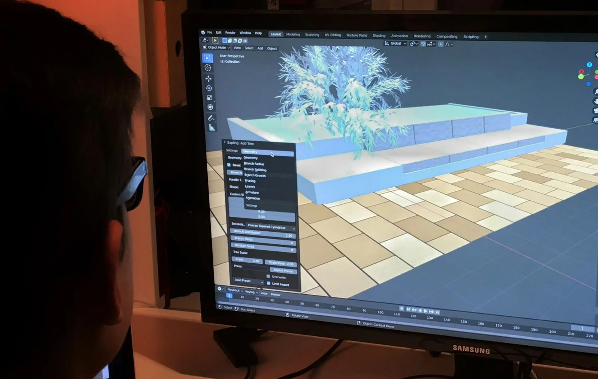

DESARROLLO WEB
Lo que he aprendido creando sitios web
Crear páginas web me ha permitido entender que el código y el diseño deben trabajar juntos para construir mejores experiencias.
Leer más05 — BITÁCORA
Un espacio donde comparto procesos, aprendizajes y reflexiones relacionadas con el mundo digital.
ENTRADAS
Crear páginas web me ha permitido entender que el código y el diseño deben trabajar juntos para construir mejores experiencias.
Leer másUna buena interfaz no solo debe verse bien: también debe ser fácil de comprender, recorrer y utilizar.
Leer más
La fotografía, el diseño, el desarrollo y el contenido pueden complementarse para crear proyectos más completos.
Leer másPoner en práctica lo aprendido permite descubrir problemas reales y encontrar soluciones de una manera más efectiva.
Leer másSIGAMOS CREANDO